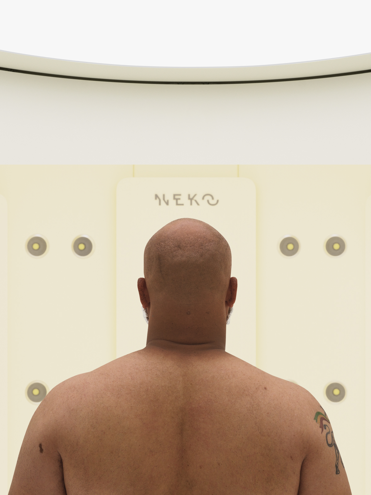
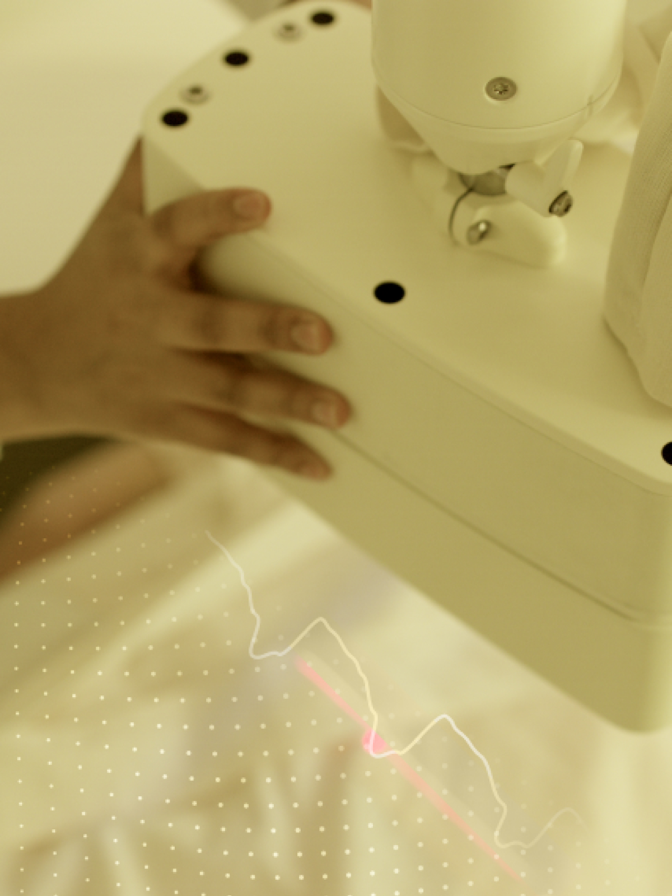
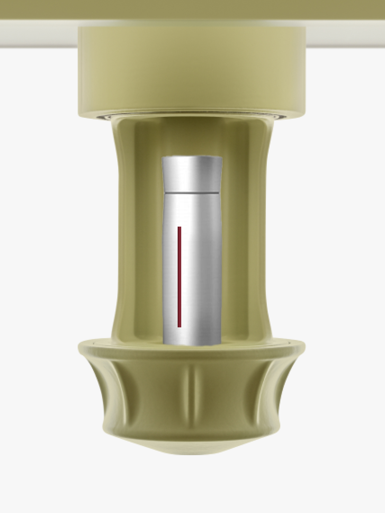
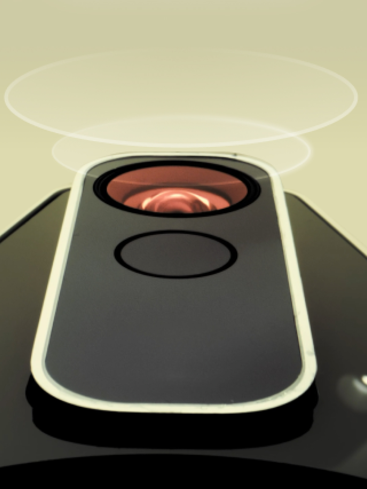

We're able to scan and track every bio marker "mole" on your body in the same amount of time you can take a selfie.
Learn MoreWe perform a comprehensive examination of your heart and arterial tree.
Learn MoreGet immediate results for over 50 essential markers, including heart health, metabolism, and vitality.
Book a Body ScanOur proprietary thermal technology maps inflammatory responses and identifies immune suppressors in real-time.
Book a Body Scan